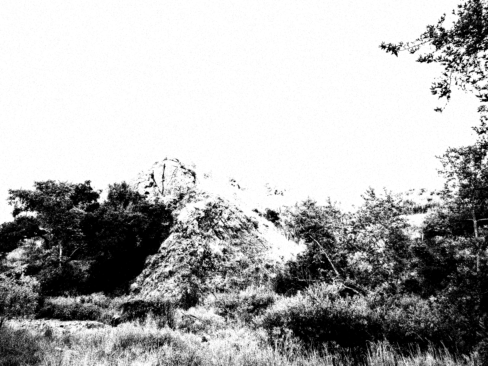

2022-12-22
Hello! Welcome to my home away from home. Incase you're new here - I update this section every now and then with some recent life-news. I recently moved back to my home state of Washington. It's nice to be back in Seattle, surrounded by trees and drizzling clouds.
